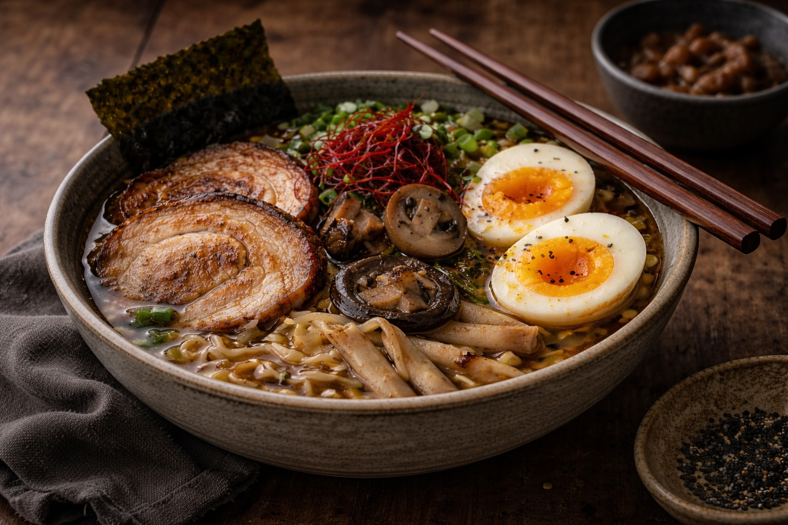

Ingrédients du ramen
Préparation détaillée
⏱ 45 minCommencer par préparer le bouillon. Faire revenir ail, gingembre et oignon dans un filet d’huile pour développer les arômes.
Ajouter le bouillon de volaille ou de légumes, puis parfumer avec sauce soja, huile de sésame, un peu de miso et éventuellement une touche de vinaigre de riz.
Laisser mijoter doucement pour que le bouillon prenne du goût. Plus il infuse, plus le ramen sera riche et profond.
Faire cuire les œufs pendant 6 à 7 minutes pour obtenir un jaune encore crémeux. Les plonger dans l’eau froide puis les écaler délicatement.
Préparer les garnitures : émincer les champignons, couper les carottes en fins bâtonnets, trancher le poulet ou le tofu et ciseler la ciboule.
Poêler rapidement le poulet ou le tofu pour qu’il soit bien doré. Faire revenir aussi les champignons pour renforcer leur saveur.
Cuire les nouilles séparément dans de l’eau frémissante selon le temps indiqué, puis les égoutter sans les surcuire.
Assembler les bols : nouilles au fond, bouillon brûlant par-dessus, puis disposer harmonieusement les garnitures, l’œuf coupé en deux et quelques graines ou herbes fraîches.
Composition personnalisée
Ta composition : Aucune
Meilleures associations de saveurs
- Le ramen classique : bouillon parfumé + poulet doré + œuf mollet + ciboule.
- Le ramen végétarien : miso + tofu grillé + champignons + maïs + graines de sésame.
- Le ramen intense : poulet + œuf + huile pimentée + ail + gingembre.
- Le ramen équilibré : nouilles + légumes croquants + champignons + herbes fraîches.
Checklist du ramen parfait
0 / 5
Temps de cuisson et d’assemblage
Choisis un minuteur utile pour la recette :